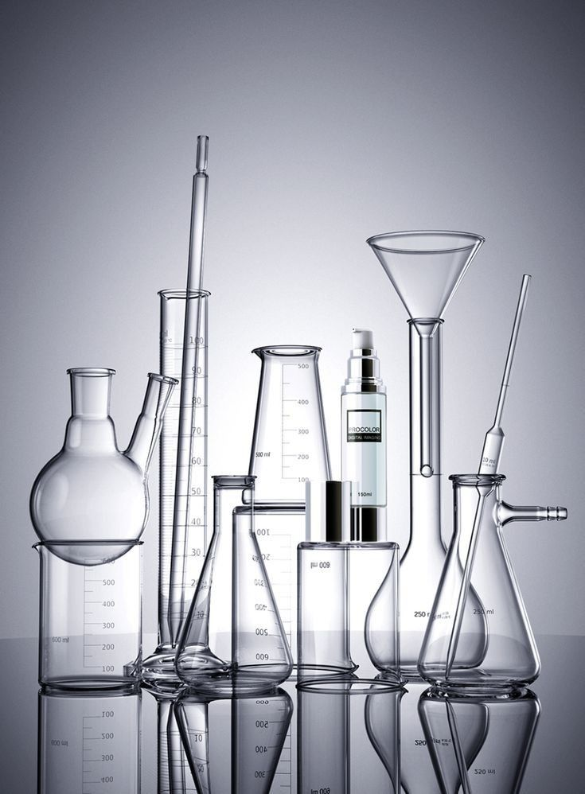
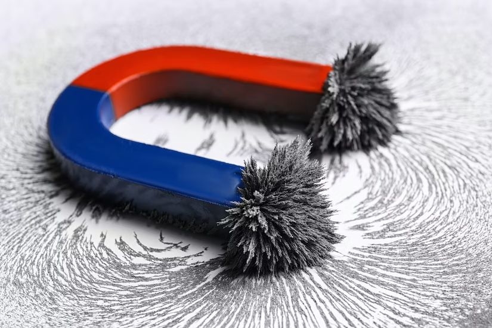

Atomic Number : 5
Atomic Mass : 10.81
Proton Number : 5
Neutron Number : 6
Category : Metalloid
Boron was first identified in 1808 by French chemist Joseph Louis Gay-Lussac and Louis Jacques Thénard, and independently by British chemist Humphry Davy. They discovered boron while studying compounds called borates and found that they could produce a new element from them. The name “boron” comes from borax, a mineral that contains boron. Later, in 1909, American chemist Ezekiel Weintraub produced boron in a much purer form, making it easier to study its properties. Since

State at room temperature: Solid Colour: Black or dark brown Odour: Odourless Taste: Tasteless Density: 2.34 g/cm³ Melting point: 2076°C Boiling point: 3927°C Solubility: Insoluble in water Atomic form: Exists as a solid with a complex atomic structure
Boron is a metalloid, so it has properties between metals and non-metals. It is a relatively unreactive element at room temperature. Boron reacts with oxygen when heated to form boron oxide. It can react with metals to form borides. Boron compounds can form strong covalent bonds. It has 3 valence electrons.
Boron is not usually found as a pure element in nature because it readily combines with other elements. It is mainly found in minerals called borates, such as borax and kernite. Boron is also present in rocks, soil, and seawater in small amounts. Large deposits of boron minerals are found in countries such as Turkey and the United States.
Boron is a useful element and is used in many different areas. It is used to make heat-resistant glass, such as borosilicate glass, and in ceramics and enamel. Boron compounds are also used in fertilizers because plants need small amounts of boron to grow. Boron is used in detergents, cleaning products, and some electronic materials. It is also used in nuclear reactors because boron can absorb neutrons.


Boron has the chemical symbol B and atomic number 5. Boron is classified as a metalloid, meaning it has properties of both metals and non-metals. Boron is very hard and has a very high melting point. Boron is important for healthy plant growth, but plants only need a small amount. The name boron comes from the mineral borax. Boron is found naturally in minerals rather than usually occurring as a pure element. Boric acid, a compound containing boron, has many useful applications. Boron can absorb neutrons, which makes it useful for controlling nuclear reactions.